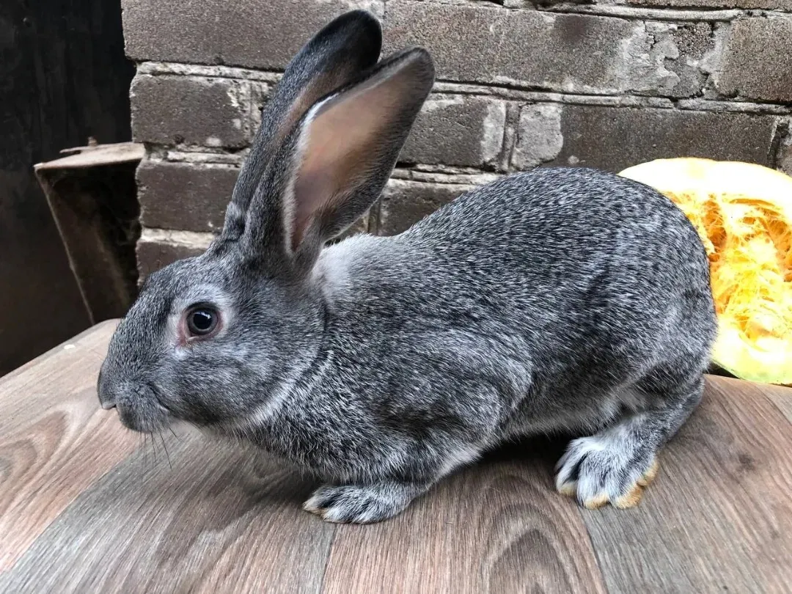
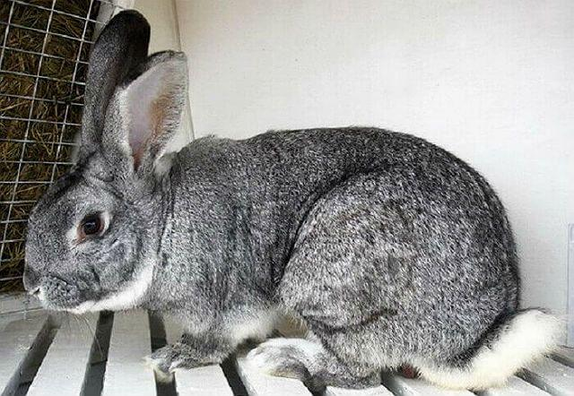
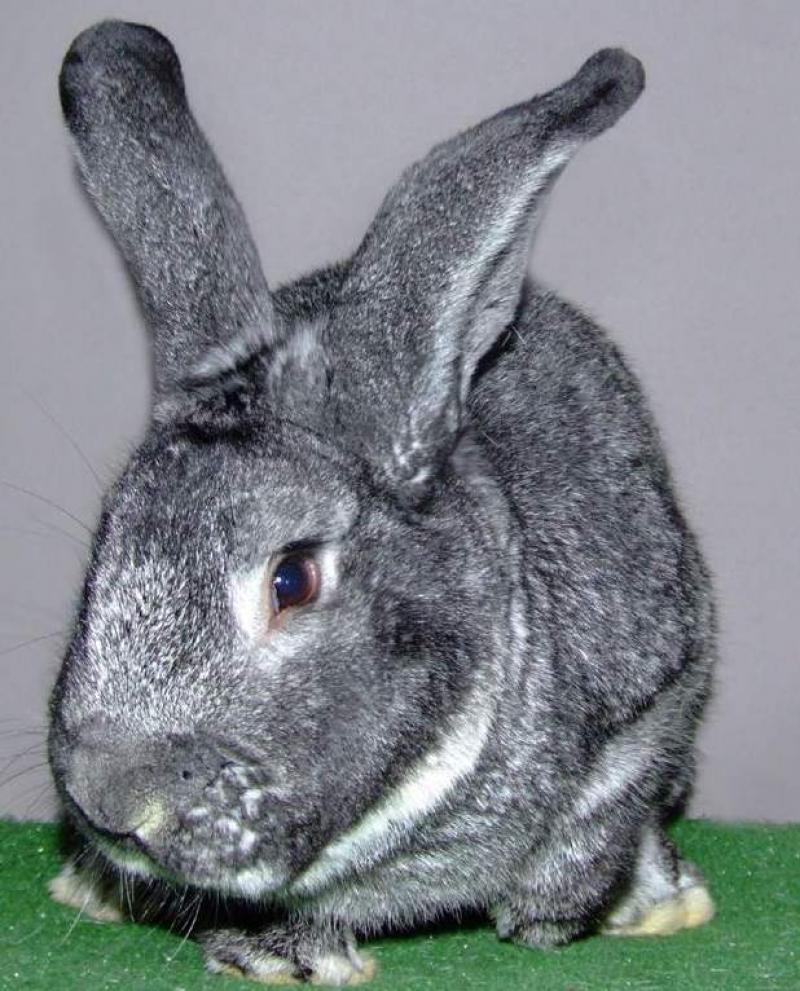
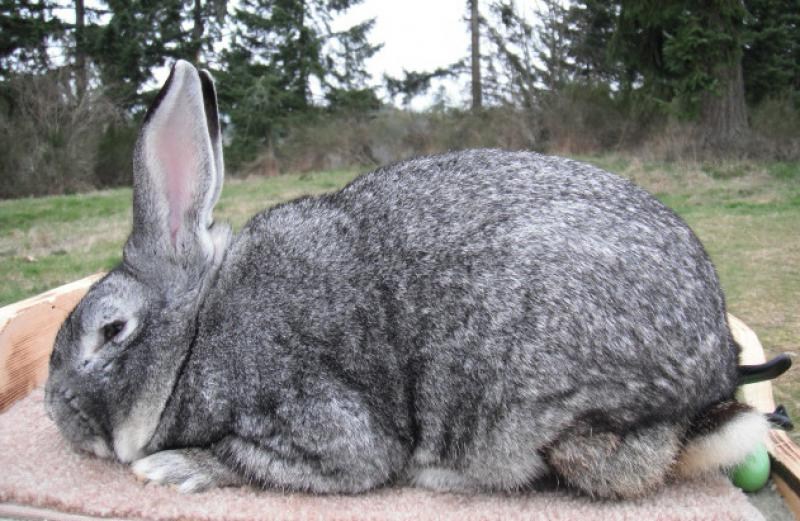
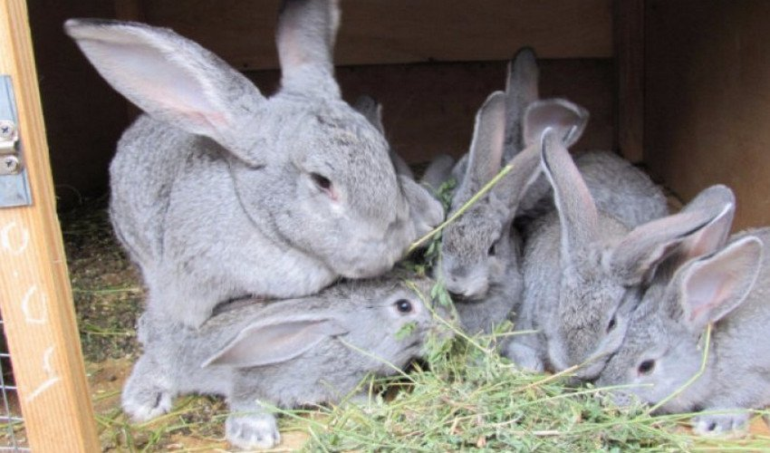
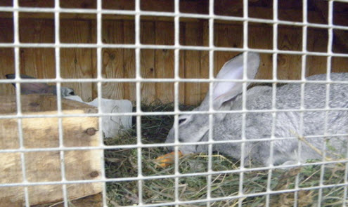
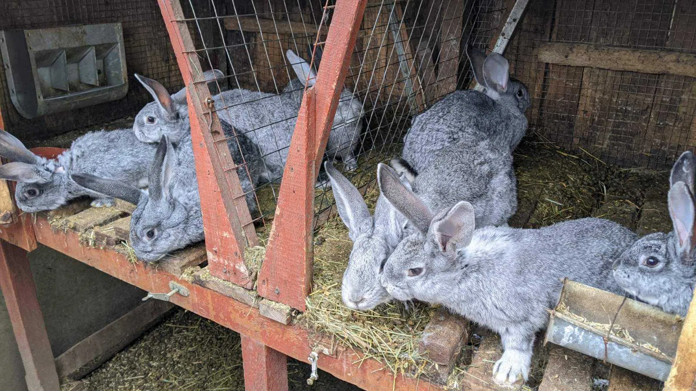
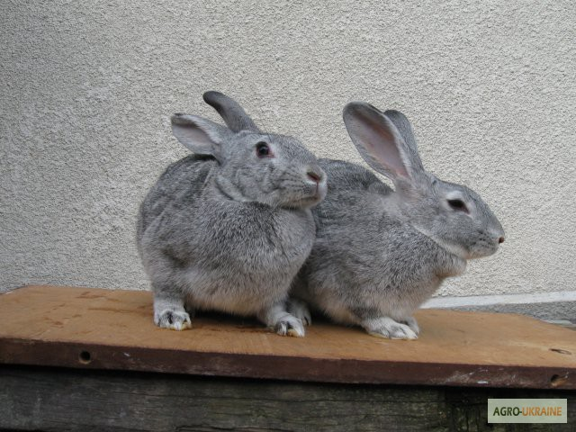

М'ясо-шкуркова порода
Повний довідник кролівника — від походження до збуту
Читати далі
Породу шиншила вивели у Франції на початку XX століття шляхом схрещування трьох вихідних порід: дикого кроля, горностаєвого та баварського блакитного кролика. Назва відсилає до дрібного гризуна з Південної Америки — шиншили, чиє хутро порода успішно імітує.
Перша публічна демонстрація відбулась у 1913 році на Паризькій виставці. Вже за кілька років порода поширилася до Великої Британії та Нідерландів, де британські селекціонери схрестили її з гігантськими кроликами, отримавши більшу масу тіла.
У 1927–1928 роках кролів-шиншил завезли до СРСР. На звірорадгоспі «Анісовський» саратовські та новосибірські селекціонери схрестили їх із Білими велетнями — так з'явилась укрупнена порода, яка набагато більша за оригінальну французьку.

Оригінальна французька порода. Невеликі розміри, жива маса 2,5–3 кг. Цінується передусім за якість хутра. Рідкісна поза Францією.
Схрещення з гігантами. Жива маса до 5 кг. Зберігає якість хутра, покращений м'ясний вихід. Популярна у Британії та Нідерландах.
Найпоширеніша лінія на пострадянському просторі. Жива маса 4–7 кг. Найвищий вихід м'яса серед різновидів. Понад 60 кролівничих ферм в Україні.
Найпопулярніша
Хутро шиншили визнане найціннішим серед усіх кролів — у 1,5–2 рази кращим за якістю порівняно з іншими породами. Природний сріблясто-сірий колір із тонкими темними переходами вважається найпопулярнішим відтінком і не потребує фарбування.
Остеві волоски мають зональну структуру з блакитнувато-сірою основою та темними кінчиками — це створює характерний «перелив» від чорного до білого, голубого та темно-сірого. Підшерсток густий, дрібнохвилястий, що робить хутро пружним і теплим.
Шкурки великих розмірів із рівномірним забарвленням активно скуповують хутряні підприємства без додаткової обробки.

Забійний вихід на 2–5% нижчий, ніж у спеціалізованих м'ясних порід, але компенсується якістю хутра.
Шкурки знімають при настанні зимового волосяного покрову — у листопаді-лютому, при повному дозріванні хутра.

Шиншила невибаглива до корму. Основу раціону складають грубі, соковиті та концентровані корми в збалансованому співвідношенні.

Мінімальний розмір клітки для одиничного утримання — 35 × 40 × 65 см. Для самиці з приплодом — не менше 60 × 45 × 50 см. Дно — сітчасте або з рейковим підлоговим покриттям для відведення сечі.
Оптимальний діапазон: +5…+25°C. Шиншила добре витримує морози (густе хутро), але зимою потрібно підвищити калорійність раціону на третину. Протяги та висока вологість недопустимі.
Природне або штучне освітлення 8–10 годин на добу. Клітки не розміщують під прямими сонячними променями — тепловий удар є серйозною загрозою.
Підстилку з сіна або соломи змінюють двічі на тиждень. Під підстилку можна прокласти шар жерсті або оцинкованої сітки для захисту від гризунів.
Постійний вільний доступ до чистої питної води. Ніпельні напувалки мінімізують забруднення. Влітку — 0,5–1 л на дорослу особину на добу.
Повне прибирання та дезінфекція клітки — щомісяця. Ємності для корму та води — щотижня. Використовують розчин хлорного вапна або спеціальних ветеринарних дезінфекторів.


Шиншила відрізняється відносно міцним здоров'ям та стійкістю до температурних перепадів. Проте щеплення та регулярний огляд є обов'язковими навіть для здорових особин.
Гостре вірусне захворювання. Профілактика: щеплення з 45-го дня життя, ревакцинація кожні 6 місяців.
Вірусне захворювання, що передається комарями та кліщами. Профілактика: щеплення двічі на рік, захист від комах.
Паразитарне захворювання кишечника. Профілактика: чистота клітки, антикокцидійні препарати у профілактичній дозі молодняку.
Бактеріальна інфекція дихальних шляхів. Профілактика: уникнення протягів, стресу, карантин нових тварин.
Вірусне запалення ротової порожнини з підвищеним слиновиділенням. Лікування: антибіотики, ротові ополіскувачі за призначенням ветеринара.
Причини: різка зміна раціону, іcкорм, що зіпсувався. Профілактика: плавний перехід між кормами, свіжість продуктів.
| Вік / Час | Вакцина | Спосіб введення | Повторення |
|---|---|---|---|
| 45 днів | ВГХК (моновалентна) | Підшкірно, 0,5 мл | Кожні 6 місяців |
| 45 днів | Міксоматоз | Підшкірно, 1 мл | Двічі на рік (перед сезоном комах) |
| 70 днів | Асоційована (ВГХК + міксоматоз) | Підшкірно, 1 мл | Кожні 6 місяців |
Між введенням двох різних вакцин витримують мінімум 14 днів. Хворих тварин не щеплять.
Так. Шиншила має спокійний, дружній характер і добре адаптується до домашніх умов. Її нерідко тримають як декоративну породу. Для цього достатньо просторої клітки, регулярного харчування та мінімального ветеринарного нагляду.
Самки статево дозрівають у 4 місяці, але перше парування рекомендують у 5–6 місяців, коли тварина має не менше 3–3,5 кг живої маси. Раннє парування негативно впливає на здоров'я самиці та вихід приплоду.
Головна ознака — зональне забарвлення ості: від голубувато-сірої основи через темну смугу до сріблясто-білого кінчика. Живіт, нижня частина хвоста та кінцівок — значно світліші. Кінчик хвоста та окантовка вух — чорні. Загальний тон шкірки — «сріблястий» без чіткого однотонного відтінку.
Французька (мала) шиншила важить 2,5–3 кг і орієнтована суто на хутро. Укрупнена шиншила — результат схрещування з Білим велетнем, маса 4–7 кг, вищий м'ясний вихід при збереженні якості хутра. Укрупнена лінія значно поширеніша на пострадянському просторі.
У господарстві самиць зазвичай використовують 3–4 роки, самців — 2–3 роки. За декоративного утримання при доброму догляді тривалість життя може сягати 7–8 років. Забій на м'ясо проводять у 3–4 місяці; на хутро — у 6–8 місяців при повному дозріванні зимового волосяного покрову.
Так. Обов'язкові щеплення від ВГХК та міксоматозу — з 45-го дня, ревакцинація кожні 6 місяців. Це особливо критично при груповому утриманні або наявності диких тварин поблизу ферми. Хворих та ослаблених кролів не щеплять.